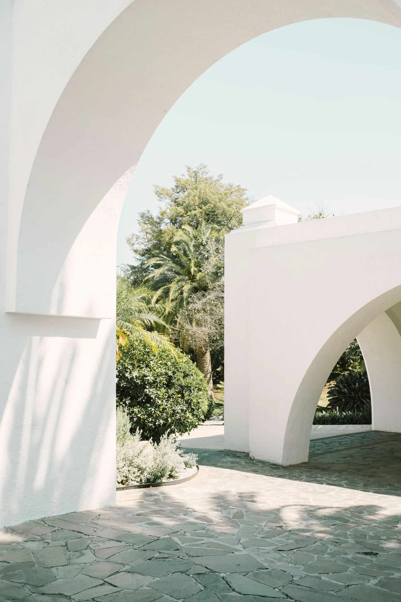
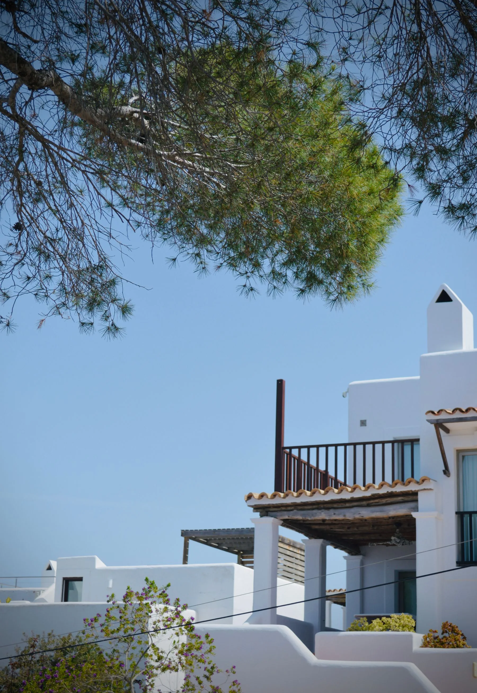
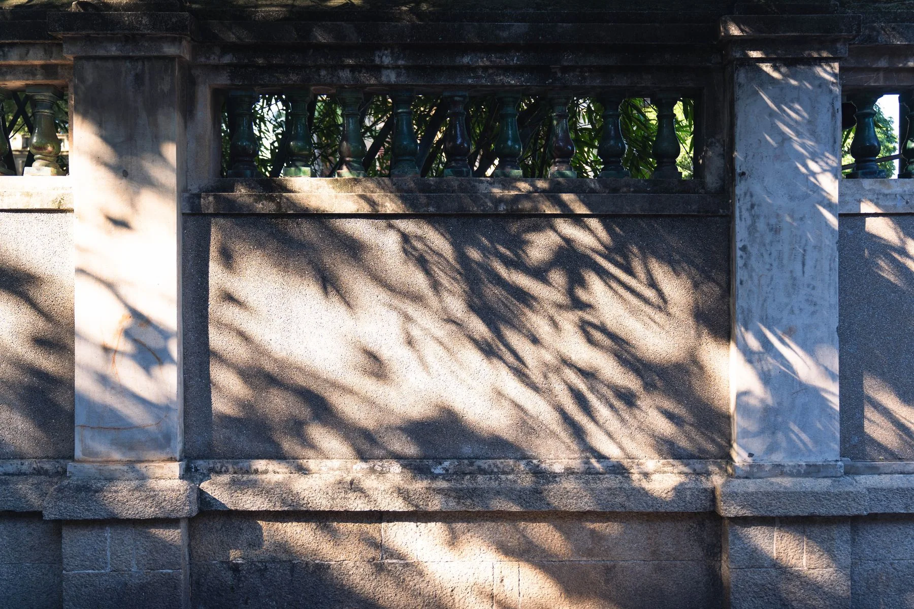
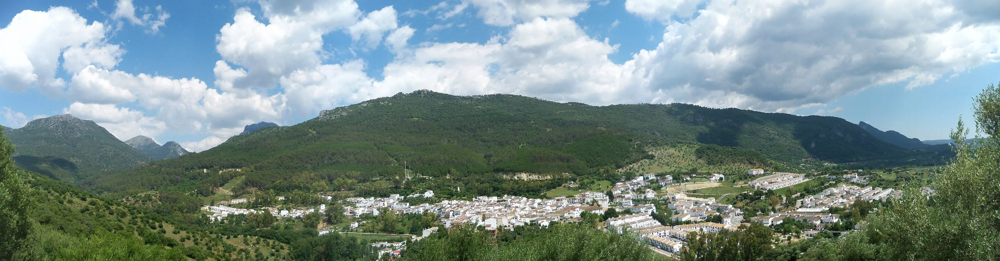
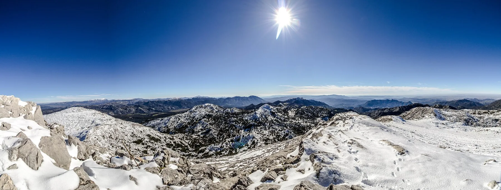

Arquitectura mediterránea · imagen ilustrativaUNA CASA. UN LUGAR. UNA HISTORIA.
Una historia
que se habita.
La Casa del Muro. Un alojamiento con carácter en El Bosque, Cádiz.
Descubre tu próxima estancia Conoce la casa01 / BIENVENIDOS
El carácter de una casa.
La vida de un pueblo.

En El Bosque, entre las calles del pueblo y el paisaje de la Sierra de Cádiz, La Casa del Muro propone una estancia con identidad propia.
Tres dormitorios, espacios para compartir y una terraza para disfrutar del exterior. Una casa para vivir el destino desde dentro.
Recorre sus espacios02 / LOS ESPACIOS
La casa, de cerca.
Interiores para compartir.
Espacios para hacerlos tuyos.
Selección de imágenes ilustrativas: los interiores y exteriores mostrados no pertenecen a La Casa del Muro. Consulta las fotografías reales del alojamiento en Booking .


03 / COMODIDADES
Lo que hace
una buena estancia.
Los detalles prácticos también cuentan.
- Tres dormitoriosTu espacio dentro de la casa
- Cocina equipadaTambién para quedarte a comer
- ChimeneaUn punto de encuentro
- TerrazaLa casa también se vive fuera
- Aire acondicionadoConfort en cada estación
- Wi-FiConexión durante tu estancia
04 / EL ORIGEN
Hay muros que
tienen algo que contar.
El nombre de la casa nace de un elemento muy concreto: su muro antiguo.
Según el anfitrión, procede de una construcción de más de cien años. Ese vínculo con la arquitectura del lugar forma parte de la identidad de La Casa del Muro.
La memoria de un lugar, presente en su nombre.
05 / EL DESTINO
El Bosque.
Y todo lo que lo rodea.
Pueblos blancos, senderos y montañas.
Otra forma de conocer Cádiz.

Un pueblo para recorrer a pie.
Sus calles, su arquitectura blanca y la cercanía del río Majaceite forman parte del paisaje cotidiano de El Bosque.

El horizonte cambia aquí.
La Sierra de Cádiz invita a descubrir caminos y miradores. El sendero del Majaceite y los pueblos cercanos son un buen comienzo.
Explora el entorno en el mapa06 / TU ESTANCIA
Tu próxima historia,
en El Bosque.
Elige tus fechas y consulta la disponibilidad y las condiciones de la estancia.
Consultar en Booking O llámanos al 644 863 76007 / HABLEMOS